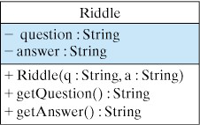

Section 1.3 Designing a Riddle Program
The first step in the program-development process is making sure you understand the problem (Figure 1.2.2). Thus, we begin by developing a detailed specification, which should address three basic questions:
-
What exactly is the problem to be solved?
-
How will the program be used?
-
How should the program behave?
In the real world, the problem specification is often arrived at through an extensive discussion between the customer and the developer. In an introductory programming course, the specification is usually assigned by the instructor. So, here is our spec:
Subsection 1.3.1 Problem Decomposition
Most problems are too big and too complex to be tackled all at once. So the next step in the design process is to divide the problem into parts that make the solution more manageable.
In the object-oriented approach, a problem is divided into objects, where each object will play a specific role in the problem’s solution. In effect, each object will become an expert or specialist in some aspect of the program’s overall behavior.
One useful design guideline for trying to decide what objects are needed is the following:
Principle 1.3.1. EFFECTIVE DESIGN: Looking for Nouns.
Choosing a program’s objects is often a matter of looking for nouns in the problem specification.
There are three nouns in our problem spec: riddle, question and answer. The riddle is a complex object contains the question and answer as parts. Those parts are just strings, and, fortunately, Java has a built-in
String class that can be used to represent the question and answer,
Thus, for this simple problem, we need only design one new type of object—a riddle—whose primary role will be to contain and display a riddle’s question and answer.
Don’t worry too much if our design decisions seem somewhat mysterious at this stage. This type of analysis will come more easily with experience.
Subsection 1.3.2 Object Design
Once we have divided a problem into a set of cooperating objects, designing a Java program is primarily a matter of designing each object. Given that we will be using the built-in
String class for the question and answer, we need only design the features of our riddle object.
Here are the main design questions we need to resolve:
-
What role will the object perform in the program?
-
What data or information will it need?
-
What actions will it take?
-
What interface will it present to other objects?
-
What information will it hide from other objects?
For our riddle object, the answers to these questions are shown in Figure 1.3.2.
-
Class Name: Riddle
-
Role: To store and retrieve a question and answer
-
Attributes (data)
-
question: A variable to store a riddle’s question (private)
-
answer: A variable to store a riddle’s answer (private)
-
-
Behaviors (actions)
-
Riddle(): A method to set a riddle’s question and answer
-
getQuestion(): A method to retrieve a riddle’s question
-
getAnswer(): A method to retrieve a riddle’s answer
-
Note that although we talk about “designing an object,” we are really talking about designing the object’s class. A class in Java defines the collection of objects that belong to that class. The class defines what type of object we are defining..
This is similar to how we talk about real-world objects. For example, Seabiscuit is a horse—that is, Seabiscuit is an object that belongs to the class of horses. Similarly, an individual riddle, such as the zebra riddle, is an object that belongs to the class of riddles. If we ask what type of object it is, the answer would be, “a Riddle”.
The role of the
Riddle object is to serve as a container for its question and answer. As we learned in Chapter 0, an instance variable is a named memory location that belongs to an object. Instance variables store the data that an object needs to perform its role. So our Riddle will need two instance variables, for the question and answer data.
Next we decide what actions a
Riddle object will take. A useful design guideline for actions is the following:
Principle 1.3.3. EFFECTIVE DESIGN: Looking for Verbs.
Choosing the behavior of an object is often a matter of looking for verbs in the problem specification.
For this problem, the key verbs are set and retrieve. As specified in Figure 1.3.2, each
Riddle object should provide some means of setting the values of its question and answer variables and a means of retrieving each value.
Each of the actions we have identified will be defined by a Java method. As you recall from Chapter 0, a method is a named section of code that can be invoked, or called upon, to perform a particular action. In the object-oriented approach, calling a method (method invocation) is the means by which interaction occurs among objects.
Calling a method is like sending a message between objects. For example, when we want to get a riddle’s answer, we would call its
getAnswer() method. This is like sending the message “Tell me the answer.”
One special method, known as a constructor, is invoked when an object is first created. We will use the
Riddle() constructor to give specific values to the riddle’s question and answer variables.
Subsection 1.3.3 The Object’s Interface
In designing an object, we must decide which methods should be made available to other objects. This determines what interface the object should present and what information it should hide from other objects.
In general, those methods needed to communicate with an object make up its interface and are designated as public in Java. All other data and methods should be kept “hidden” from other objects and are therefore designated as private in Java.
For example, it is not necessary for other objects to know where a
Riddle object stores its question and answer. The fact that they are stored in variables named question and answer, rather than variables named ques and ans, is irrelevant to other objects.
Principle 1.3.4. EFFECTIVE DESIGN: Object Interface.
An object’s interface should consist of just those methods needed to use and communicate with the object.
Principle 1.3.5. EFFECTIVE DESIGN: Information Hiding.
An object should hide most of the details of its implementation.
Taken together, these various design decisions lead to the specification shown in the UML class diagram in Figure 1.3.6.
A class diagram has three parts. The top part gives the name of the class (
Riddle). The second part gives its instance variables, which are typically designated as private (\(-\)). The third part gives the object’s methods, which in this case are all designated as public (\(+\)).

Riddle class. Its instance variables are private (\(-\)). Its methods are public (\(+\)).Subsection 1.3.4 Data
For designing the data needed for our
Riddle object, the main question is this:-
What type of data will be used to represent the information needed by the riddle?
This question is easily answered for our
Riddle object. Like other programming languages, Java supports a wide range of different types of data, some simple and some complex. Obviously a riddle’s question and answer variables should be represented by Java String objects, as specified in the UML diagram (Figure 1.3.6).
Subsection 1.3.5 Methods, and Algorithms
For each of the object’s methods, we need to figure out its task, its data, its algorithm and its result:
-
What specific task will the method perform?
-
What information (data) will it need to perform its task?
-
What algorithm will the method use?
-
What result will the method produce?
Methods can be thought of as using data and an algorithm to perform a task and produce a result. The
Riddle methods are very simple to describe:
Constructor: Riddle(q:String, a:String)
|
Algorithm: Assign the values of q and a as the values of question and answer, respectively |
Instance method getAnswer():String
|
Algorithm: Return the Riddle’s answer
|
Instance method: getQuestion():String
|
Algorithm: Return the Riddle’s question
|
For example, if we use our constructor to create a zebra riddle as follows:
Then when we call
getQuestion() the riddle would tell us (return) “What is black and white and red all over?” And when ask the riddle for the answer, getAnswer(), it would tell us “An embarrassed zebra”.
Subsection 1.3.6 Algorithms and Pseudocode
An algorithm is a step-by-step process for performing a certain task. Not all algorithms are as simple as those for our
Riddle methods.
When writing a program, the algorithm for even a simple arithmetic problem can be more complex than doing the calculation by hand. For example, consider the task of calculating the sum of a list of numbers. If we were telling our classmate how to do this problem, we might just say, “add up all the numbers and report their total.”
But this description is far too vague and imprecise to be used in a program. Here’s an algorithm that a program could use:
Algorithm 1.3.7.
1. Set the initial value of the sum to 0.
2. If there are no more numbers to total, go to step 5.
3. Add the next number to the sum.
4. Go to step 2.
5. Report the sum.
Note that each step in this algorithm is simple and easy to follow. It would be relatively easy to translate it into Java.
Because English is imprecise and often ambiguous, programmers frequently write algorithms in pseudocode, a hybrid that combines English and programming language structures without being too fussy about programming language syntax. For example, the preceding algorithm might be expressed in pseudocode as follows:
Algorithm 1.3.8.
sum = 0
while (more numbers remain)
add next number to sum
print the sum
While it is unlikely that experienced programmers would need to write out pseudocode for such a simple algorithm, many programming problems are quite complex and require careful design to minimize errors.
Another important part of designing an algorithm is to trace it—that is, to step through it line by line—on some sample data. For example, we might test the list-summing algorithm by tracing it on the list of numbers shown here:
| Sum | List of Numbers |
|---|---|
| 0 | 54 30 20 |
| 54 | 30 20 |
| 84 | 20 |
| 104 | - |
Initially, the sum starts out at 0 and the list of numbers contains 54, 30, and 20. On each pass through the algorithm, the sum increases by the amount of the next number, and the list diminishes in size. The algorithm stops with the correct total left under the sum column. While this trace didn’t turn up any errors, it is frequently possible to find flaws in an algorithm by tracing it in this way.
Subsection 1.3.7 Coding into Java
Once a sufficiently detailed design has been developed, it is time to start generating Java code. The wrong way to do this would be to type the entire program and then compile and run it. This generally leads to dozens of errors that can be both demoralizing and difficult to fix.
The right way to code is to use the principle of stepwise refinement. The program is coded in small stages, and after each stage the code is compiled and tested. For example, you could write the code for a single method and test that method before moving on to another part of the program. In this way, small errors are caught before moving on to the next stage.
The code for the
Riddle class is shown in Listing 1.3.9. Even though we have not yet begun learning the details of the Java language, you can easily pick out the key parts in this program: the instance variables question and answer of type String, which are used to store the riddle’s data; the Riddle() constructor and the getQuestion() and getAnswer() methods make up the interface. The specific language details needed to understand each of these elements will be covered in this and the following chapter.
public class Riddle extends Object // Class header
{ // Begin class body
private String question; // Instance variables
private String answer;
public Riddle(String q, String a) // Constructor method
{
question = q;
answer = a;
} // Riddle()
public String getQuestion() // Instance method
{
return question;
} // getQuestion()
public String getAnswer() // Instance method
{
return answer;
} //getAnswer()
} // Riddle class // End class body
Try the Riddle program below.
Activity 1.3.2.
Run the following code. Try changing the Riddle question and answer in the main method and run again.
Subsection 1.3.8 Syntax and Semantics
Writing Java code requires that you know its syntax and semantics, where syntax refers to a program’s grammar and semantics corresponds to its meaning.
A language’s syntax is the set of rules that determines whether a particular statement is correctly formulated. An example of a Java syntax rule is that a Java statement must end with a semicolon. For example:
sum = 0;
sum = 0 // Syntax error, missing semicolon
This is comparable to a grammatical error in English:
The rain in Spain falls mainly on the plain.
Spain rain the mainly in on the falls plain. // Ungrammatical
However, unlike in English, where one can still be understood even when one breaks a syntax rule, in a programming language the syntax rules are very strict. If you break even the slightest syntax rule—e.g., forget a semicolon—the program won’t work at all.
Similarly, the programmer must know the semantics of the language. The semantics of a programming statement refers to what it does — to its effect on the program. For example, the meaning of the following statement,
sum = 10 + 15;
is to add 10 and 15 and store their sum in the variable
sum.
Learning Java’s syntax and semantics is a lot like learning a foreign language. The more quickly you become fluent in the new language (Java), the better you will be at expressing solutions to interesting programming problems. The longer you struggle with Java’s rules and conventions, the more difficult it will be to talk about problems in a common language.
Subsection 1.3.9 Testing, Debugging, and Revising
Coding, testing, and revising a program is an repetitive process, one that may require you to repeat the different program-development stages shown in (Figure 1.2.2).
According to the stepwise-refinement principle, the process of developing a program should proceed in small, incremental steps, where the solution becomes more refined at each step. However, no matter how careful you are, things can still go wrong during the coding process.
A syntax error is an error that breaks one of Java’s syntax rules. Such errors will be detected by the Java compiler. Syntax errors are relatively easy to fix once you understand the compiler’s error messages.
As long as a program contains syntax errors, the programmer must correct them and recompile the program. Once all the syntax errors are corrected, the compiler will produce an executable version of the program, which can then be run.
When a program is run, the computer carries out the steps specified in the program’s statements and produces results. However, just because a program runs does not mean that its actions and results are correct. A running program can contain semantic errors, also called logic errors. A semantic error causes the program to behave incorrectly, producing incorrect results.
Unlike syntax errors, semantic errors cannot be detected automatically. For example, suppose that a program contains the following statement for calculating the area of a rectangle:
area = length + width;
Because we are adding length and width instead of multiplying them, the area calculation will be incorrect. Because there is nothing syntactically wrong with the expression
length + width, the compiler won’t detect an error in this statement. Thus, the computer will still execute this statement and compute the incorrect value for the rectangle’s area.
Semantic errors can only be discovered by testing the program and they are sometimes very hard to detect. Also, just because a program appears to run correctly on one or more tests doesn’t guarantee that it is correct. It may just mean that it has not been adequately tested.
Fixing semantic errors is known as debugging a program, and when subtle errors occur it can be the most frustrating part of the whole program development process. The various examples presented will occasionally provide hints and suggestions on how to track down bugs, or errors, in your code.
One point to remember when you are trying to find a very subtle bug is that no matter how convinced you are that your code is correct and that the bug must be caused by some kind of error in the computer, the error is almost certainly caused by your code!
Subsection 1.3.10 Writing Readable Programs
Becoming a proficient programmer goes beyond simply writing a program that produces correct output. It also involves developing good programming style, which includes how readable and understandable your code is. Our goal is to help you develop a programming style that satisfies the following principles:
-
Readability. Programs should be easy to read and understand. Comments should be used to document and explain the program’s code.
-
Clarity. Programs should employ well-known constructs and standard conventions and should avoid programming tricks and unnecessarily obscure or complex code.
-
Flexibility. Programs should be designed and written so that they are easy to modify.
You have attempted of activities on this page.